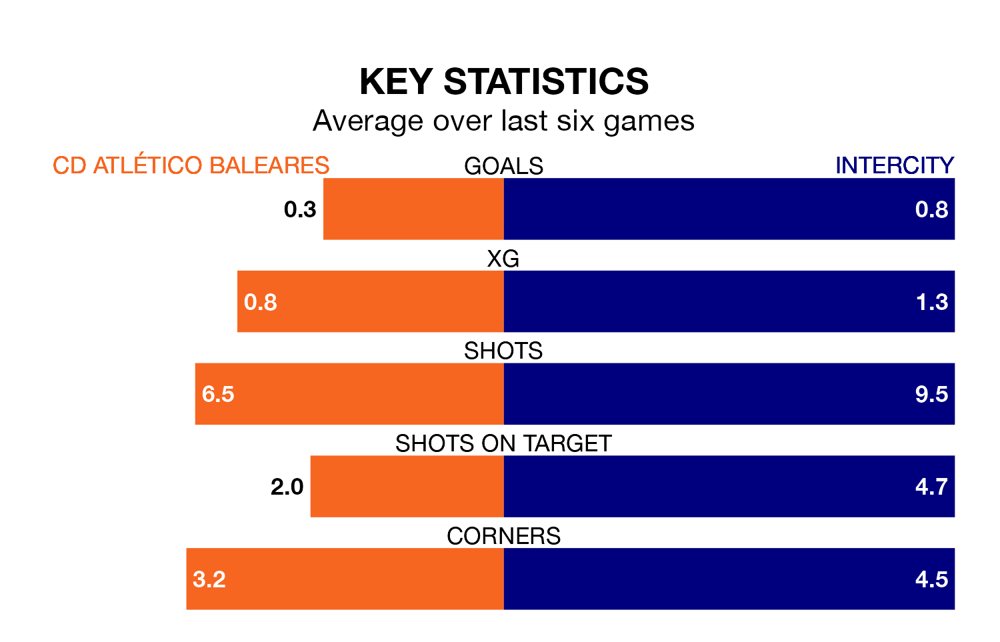

CD Atlético Baleares face Intercity at Campo de Son Malferit on Sunday looking to secure a first win in 11 Primera Division RFEF Group 2 games.
Atlético Baleares have lost eight and drawn two matches since they last earned three points – against Antequera CF on February 11.
They face an Intercity side who have won three and drawn one over that time.
Atlético Baleares are 19th in the table after 33 games, of which they have won five and drawn eight, earning 23 points.
Intercity are seven places ahead of the home side in 12th, with 11 wins and nine draws putting them on 42 points.
With 17 goals in 33 games so far this season, Atlético Baleares are the league's lowest scorers with 0.5 goals per game. And they are conceding more than average, letting in 52 goals at a rate of 1.6 per game.
The visitors are also below average scorers, with 1.0 goal per game, compared to a league average of 1.1. They have conceded 1.2 goals per game.
In Emilio Nsue López, Intercity have one of the league's most on-form strikers so far this season. He has notched seven goals in 16 appearances, to sit sixth in the scoring charts.
Atlético Baleares's top scorer, with seven goals in 18 games, is David Rodríguez Sánchez.
In the last three years, Atlético Baleares and Intercity have played each other on three occasions. they drew all of them.
Their last meeting was on October 22, when they played out a 0-0 draw.
Atlético Baleares's last match was on April 21, a 2-1 loss against Ceuta, with Rubén Rochina Naixes getting the goal for Atlético Baleares.
Intercity lost 2-0 against Córdoba last time out, also on Sunday.
Updated: 07:59 (UTC), 26/04/24